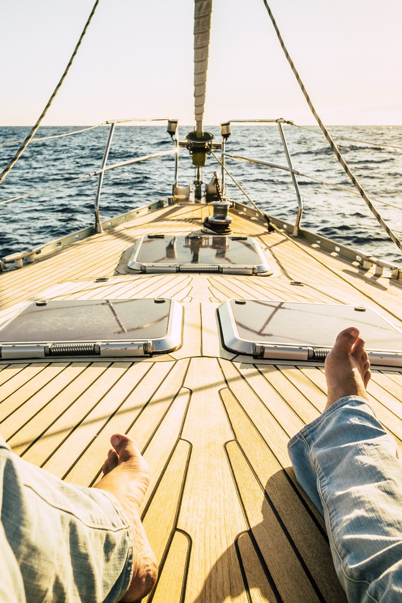

Packing for a yacht charter is different from packing for any other outing. The marine environment presents unique considerations - from intense sun reflection off the water to temperature changes between open decks and air-conditioned cabins. Bringing the right items ensures you're comfortable, prepared, and able to fully enjoy your time on the water.
After hosting thousands of charters in Boston Harbor, we've compiled the definitive packing list. Whether you're boarding for a 4-hour sunset cruise or a full-day island-hopping adventure, this guide has you covered.
The Essentials: Never Leave Without These
Sun Protection
Sun exposure on the water is significantly more intense than on land. Water reflects up to 100% of UV rays, meaning you're essentially getting sun from above and below simultaneously. This is the single most important category on your packing list.
- Sunscreen SPF 50+: Apply 30 minutes before boarding and reapply every 2 hours. Choose a reef-safe, water-resistant formula. Don't forget your ears, the back of your neck, and the tops of your feet.
- Sunglasses with UV protection: Polarized lenses are ideal because they cut glare off the water. Bring a retainer strap so they don't end up in the harbor.
- Wide-brimmed hat: A hat with a brim of at least 3 inches provides meaningful shade for your face and neck. Baseball caps work but leave the ears and neck exposed.
- Lip balm with SPF: Easily forgotten, but windburn on the lips is uncomfortable and completely avoidable.
Clothing
The key principle is layering. It can be 80 degrees at the marina and 65 degrees once you're cruising at speed on open water. Dress for versatility:
- Light layers: A linen shirt, light sweater, or windbreaker that you can add or remove as conditions change.
- Swimwear: Even if you don't plan to swim, wearing a swimsuit under your clothes means you're ready if the opportunity arises. Many of our guests end up in the water even when they didn't expect to.
- Change of clothes: Pack a dry outfit in a small bag in case you get splashed or decide to swim. Arriving back at the marina in dry, fresh clothes is a small luxury.
- Light jacket or hoodie: Essential for evening cruises. Once the sun drops, temperatures on the water can fall 10-15 degrees quickly.
Footwear
This is where many first-time charter guests make mistakes. The right footwear matters more than you might think:
- Soft-soled, non-marking shoes: Boat shoes, clean sneakers with white soles, or deck sandals. Dark rubber soles can leave marks on the yacht's deck and are not permitted on most vessels.
- No high heels or hard-soled dress shoes: These can damage teak decks and are unsafe on a moving vessel.
- Flip-flops: Acceptable for casual charters but not ideal - they can be slippery on wet decks. Sport sandals with straps are better.
- Water shoes: Essential if you plan to visit beaches on the harbor islands or wade in rocky areas.

Health and Comfort
Motion Sickness Prevention
Even if you don't typically get motion sick, the marine environment can affect anyone, especially on your first time out. Prevention is far more effective than treatment:
- Motion sickness medication: Take Dramamine or Bonine the night before and the morning of your charter. Non-drowsy formulas are available.
- Sea-Band wristbands: Acupressure bands that many people find effective without medication side effects.
- Ginger: Natural ginger tablets, ginger ale, or crystallized ginger can help settle the stomach.
- Avoid heavy meals: Eat a light meal before boarding. Avoid greasy, heavy, or spicy foods.
- Stay on deck: If you feel queasy, go outside, face forward, and focus on the horizon. Fresh air and visual orientation help tremendously.
Personal Items
- Medications: Any prescription medications you take regularly. Bring them in their original containers.
- Hand sanitizer and wet wipes: Useful throughout the day.
- Tissues or handkerchief: Wind and salt spray can make noses run.
- Hair ties: Long hair and ocean wind are not compatible. Bring extras.
Technology and Photography
- Fully charged phone: For photos, navigation apps, and communication. Airplane mode extends battery life significantly if you don't need connectivity.
- Waterproof phone case: A $15 waterproof pouch protects your $1,000 phone from splashes and accidental drops. This is non-negotiable.
- Portable charger: A power bank ensures your phone lasts the entire trip, especially if you're taking lots of photos and video.
- GoPro or action camera: Great for underwater shots, action sequences, and wide-angle perspectives that phone cameras can't capture.
- Binoculars: For wildlife watching, spotting harbor seals, and enjoying distant views. A compact pair takes up little space.
Food and Drinks
If your charter doesn't include catering, or if you prefer to bring your own provisions:
- Water: Stay hydrated. Sun, wind, and salt air are dehydrating. Bring more than you think you need.
- Snacks: Non-perishable, non-messy options like nuts, protein bars, crackers, and fruit work well on a moving boat.
- Cooler-friendly foods: If the charter includes a cooler, pack sandwiches, cheese, charcuterie, and chilled beverages.
- Reusable water bottle: Better for the environment and keeps drinks cold longer than disposable bottles.
What NOT to Bring
Equally important as knowing what to pack is knowing what to leave behind:
- Excessive luggage: Storage space on yachts is limited. Pack light in soft bags that can be stowed easily. No hard-sided suitcases.
- Valuables: Leave expensive jewelry and watches at home. The marine environment is rough on fine items, and the risk of loss overboard is real.
- Spray-on aerosol sunscreen: The mist can damage yacht finishes and electronics. Use lotion-based sunscreen instead.
- Red wine: On white-interior yachts, red wine spills are a nightmare. If you must bring wine, opt for white or rose. Our crew will appreciate it.
- Banana peels and other slippery foods: They create safety hazards on wet decks. Dispose of all food waste properly.
- Bad shoes: As mentioned above - no dark-soled shoes, heels, or boots.
Charter-Specific Packing Tips
Fishing Charters
All tackle and gear are provided, but bring: polarized sunglasses (essential for spotting fish), a bandana or buff for sun protection, and a cooler bag for your catch. See our fishing charter guide for more details.
Evening and Sunset Cruises
Dress in smart-casual layers. A light scarf or pashmina adds elegance and warmth for sunset cruises. Bring a compact camera or ensure your phone is charged for golden-hour photography.
Party Charters
Coordinate with your host about dress code. Bring a small clutch or crossbody bag rather than a large purse. Dancing shoes should have non-marking, non-slip soles. Check our party planning guide for guest communication tips.
Ready to Pack and Go?
Now that you know what to bring, all that's left is to book your charter and start looking forward to it.
Book Your Charter